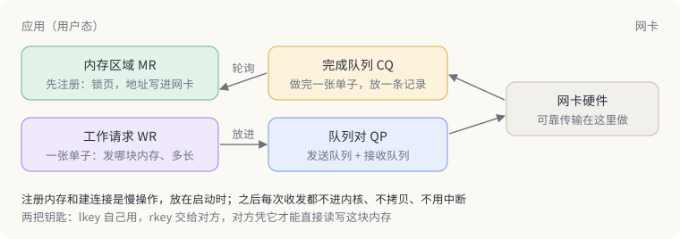
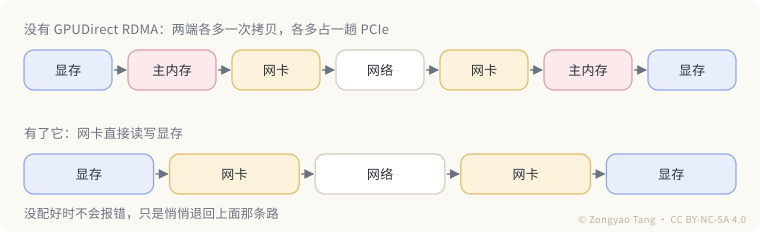

线索是：RDMA 把“发数据”这件事拆成了四个对象 → 用这四个对象可以做两类操作，其中一类完全不需要对方的 CPU → 但这种做法要求网络几乎不丢包，InfiniBand 就是为此设计的 → 以太网本来会丢包，RoCE 要补上这一点 → 最后把内存换成显存，就是 GPUDirect RDMA。如果你的集群用的是 InfiniBand，第三条和后面的排查最贴近实际。
第 5 部分 · 高速互联5.2 RDMA 与 InfiniBand
这一单元回答RDMA 是怎样做到绕过内核、零拷贝的？InfiniBand 和 RoCE 有什么不同？
承接 0.3 的“内核网络栈的开销”：那里说了为什么要绕过内核，这一单元讲怎么绕。
- RDMA 的四样东西：注册内存、队列对、工作请求、完成队列
- RDMA write：直接写进对方的内存，对方的 CPU 不需要知道
- RDMA 假设网络几乎不丢包；InfiniBand 用“信用”做到这一点
- RoCE：把同一套传输搬到以太网上，再想办法让以太网不丢包
- GPUDirect RDMA：注册的不是主内存，而是显存
讲解
1RDMA 的四样东西：注册内存、队列对、工作请求、完成队列
用 RDMA 传数据，应用先把一块内存“注册”给网卡，得到两把钥匙；再和对方建立一个“队列对”（QP）；之后每次传输，就是往队列里放一张“工作请求”，说明要传哪块内存；网卡做完后，在“完成队列”里放一条回执。整个过程不进内核。
0.3 说过，传统的 socket 每次收发都要经过系统调用、拷贝、协议处理、中断四道手续。RDMA 的编程接口（叫 verbs）围绕四个对象，把这些手续全部移到了“事先”。

四个对象和它们之间的关系 内存区域（MR）：先登记，后使用。 调用注册接口，告诉网卡“这块内存以后可能用来收发”。注册做两件事：把这块内存锁页（0.3 讲过为什么），并把它的地址映射写进网卡。注册完得到两把钥匙：
- 本地钥匙（lkey）：自己发数据时用。
- 远程钥匙（rkey）：交给对方，对方凭它才能直接读写这块内存。
队列对（QP）：一条连接的两端。 每个 QP 有一个发送队列和一个接收队列。训练里用的是“可靠连接”类型：一个 QP 只和对端的一个 QP 配对，网卡保证数据按序、不丢地送达。QP 建好后要经过几次状态切换才能用，这个握手过程比较慢。
工作请求（WR）：一张单子。 要发数据时，应用填一张单子（操作类型、内存地址、长度、钥匙），放进 QP 的发送队列。这一步只是往一块和网卡共享的内存里写几个字段，再“敲一下门铃”通知网卡，不进内核。
完成队列（CQ）：回执。 网卡执行完一张单子，就往 CQ 里放一条完成记录。应用自己去查（轮询）有没有新的记录，同样不进内核。
对照 0.3 的四项开销：系统调用没有了（写共享内存加门铃）；拷贝没有了（网卡直接从注册的内存取数据）；协议处理由网卡硬件完成；中断可以不用（应用轮询 CQ）。
代价也很清楚：注册内存和建立 QP 都是慢操作，而且注册的内存被锁住、不能再被系统调配。所以用 RDMA 的程序都会在启动时把缓冲区和连接准备好。
源码导读：一次 RDMA write 的代码骨架
下面是 verbs 接口的调用顺序。真实代码每一步都有不少参数，这里只留骨架，目的是读 NCCL 的
net_ib.cc时能认出每一段在干什么。接口名都是 libibverbs 的标准名字，手册里有逐个的说明。// —— 一次性的准备 —— ctx = ibv_open_device(dev); // 打开网卡 pd = ibv_alloc_pd(ctx); // 保护域：把下面这些对象圈在一起 mr = ibv_reg_mr(pd, buf, len, 权限); // 注册内存，得到 mr->lkey 和 mr->rkey cq = ibv_create_cq(ctx, ...); // 完成队列 qp = ibv_create_qp(pd, ...); // 队列对，类型选 RC（可靠连接） // 和对端交换 QP 编号、地址、rkey（通过一条普通的带外连接） // 然后把 QP 逐步切换到可用状态 ibv_modify_qp(qp, ... INIT); ibv_modify_qp(qp, ... RTR); // ready to receive ibv_modify_qp(qp, ... RTS); // ready to send // —— 每次传输 —— wr.opcode = IBV_WR_RDMA_WRITE; // 直接写进对方的内存 wr.sg_list = { buf, len, mr->lkey }; // 我这边的数据在哪 wr.wr.rdma.remote_addr = 对方的地址; wr.wr.rdma.rkey = 对方给的钥匙; ibv_post_send(qp, &wr, ...); // 放进发送队列，不进内核 ibv_poll_cq(cq, ...); // 轮询完成队列，拿回执读的时候抓三件事：
- 哪些是一次性的。 从打开设备到 QP 进入 RTS 都只做一次。训练启动慢、启动时报错，问题多半在这一段。比如
ibv_reg_mr或ibv_create_qp失败，NCCL 文档给出的常见原因是允许锁页的内存上限（memlock）太小。 - “带外连接”是什么。 两端要先用一条普通的 TCP 连接交换 QP 编号和钥匙，RDMA 连接才建得起来。NCCL 日志里的 OOB 指的就是这条连接；它选错了网络接口，初始化就会卡住。
- 每次传输只有两个调用。
ibv_post_send和ibv_poll_cq。NCCL 在主机上有一个专门的线程循环做这两件事（6.2）。
打个比方像在仓库开了一个专用月台：先把一片货位登记给物流公司（注册内存），拿到货位编号；之后每次发货只要填一张单子放进收件箱（工作请求），物流公司自己来搬，搬完在回执箱里留个条（完成队列）。你不用每次都找前台办手续。
所以 RDMA 的开销集中在“建立”阶段：注册内存、建连接都很慢，要提前做好并反复使用。NCCL 在初始化时把这些一次做完，训练过程中只剩下填单子。
- 有了这四个对象，能做的操作分两类。第二类是 RDMA 最有特点的地方。
2RDMA write：直接写进对方的内存，对方的 CPU 不需要知道
RDMA 有两类操作。send/recv 是双方配合的：接收方要事先准备好接收缓冲区。RDMA write 和 read 是单方完成的：发起方拿着对方的地址和钥匙，让两边的网卡直接把数据写进（或读出）对方的内存，对方的应用和 CPU 完全不参与。
双方配合：send 和 recv。 接收方先往自己的接收队列里放一张单子，说“下一个到达的消息放在这块内存”；发送方再发。数据到达时，接收方的网卡取出一张接收单子，把数据写到它指定的位置，并在接收方的完成队列里放一条记录。如果数据到了而接收队列是空的，发送方会收到“对方没准备好”的错误并重试。
单方完成：RDMA write 和 read。 发起方在单子上直接写明对方的内存地址和远程钥匙。对方的网卡收到后核对钥匙，然后直接把数据写进那块内存（write），或者把那块内存的内容读出来发回去（read）。对方的应用没有填任何单子，完成队列里也不会出现记录。
单方操作省掉了接收方的一切软件开销，但带来一个问题：接收方怎么知道数据到了？常见的做法是“带立即数的 RDMA write”：它和普通的 write 一样把数据写进对方内存，但额外带一个小整数，并且会在对方的完成队列里产生一条记录。
NCCL 怎么组合它们（依据 Demystifying NCCL 对源码的分析）：
- 每一对要通信的 GPU 之间建两个可靠连接的 QP，一个方向一个。
- 接收方先通过反方向的 QP 发一条很小的“可以发了”（clear-to-send）消息，里面是接收缓冲区的地址和钥匙。这一步既是告知地址，也是流量控制：接收方没准备好，发送方就不会发。
- 发送方用一个或多个 RDMA write 把大块数据直接写进对方的缓冲区。
- 最后用一条带立即数的 write 通知对方“这一批写完了，一共多少”。
5.3 会再回到“接收方先说可以发”这个设计：它恰好成了大规模集群里控制拥塞的手段。
打个比方像有了对方信箱的钥匙：send/recv 是敲门，等对方开门接过去；RDMA write 是你直接把东西放进他的信箱，他甚至不知道你来过。
所以接收一侧几乎没有 CPU 开销，这是 RDMA 低延迟的关键。代价是对方不知道数据到了，需要另外通知。NCCL 的做法是数据用 RDMA write 送，最后补一条带“附言”的写操作当通知。
出处RDMA 编程手册 §3.1 可用的通信操作：Send、RDMA Read、RDMA WriteDemystifying NCCL 第 5 页 IB 传输：QP 的布局与 CTS- 这种“网卡直接读写内存”的做法，对网络本身提出了一个很高的要求。
3RDMA 假设网络几乎不丢包；InfiniBand 用“信用”做到这一点
RDMA 的可靠传输由网卡硬件实现，逻辑很简单：丢了一个包，就从那个包开始把后面的全部重发，代价很大。所以它需要一张几乎不因拥塞丢包的网。InfiniBand 就是这样设计的：每一段链路上，接收端告诉发送端“我还有多少空位”（信用），没有信用就不发。
为什么怕丢包。 TCP 把可靠传输做在操作系统里，可以用复杂的算法：选择性重传、精细的拥塞窗口。RDMA 把可靠传输做进网卡硬件，逻辑必须简单。常见的做法是：接收方发现序号不连续，就要求发送方从缺的那个包开始全部重发。一条 400 Gb/s 的链路上，丢一个包意味着重发一大段数据，延迟一下子从微秒级跳到毫秒级。偶尔的物理错误可以这样处理，但如果网络一拥塞就丢包，性能会崩溃。
InfiniBand 怎么做。 它是一整套为此设计的网络，和以太网是两个体系：
- 基于信用的流控。 每一段链路（网卡到交换机、交换机到交换机）上，接收端持续告诉发送端自己的缓冲区还有多少空位。发送端手里有信用才发包，用完就停。于是缓冲区永远不会溢出，不会因为拥塞而丢包。
- 子网管理器（SM）。 整个网络由一个集中的管理程序配置：它发现拓扑，给每个端口分配地址（LID），计算路由并下发到每台交换机。没有子网管理器在运行，端口就停在“已连线但未激活”的状态。
- 速率。 常见的几代：EDR 是 100 Gb/s，HDR 是 200 Gb/s，NDR 是 400 Gb/s（都按 4 条通道合计）。
这对排查意味着什么。 既然不丢包，拥塞时数据就在发送端等信用。所以：
- “等”有专门的计数器（发送等待，xmit wait）。它一直在涨，说明这个端口经常想发却发不出去，下游有拥塞或者有慢的接收者。
- 物理层的错误（信号质量差、线缆或光模块有问题）是另一类计数器：符号错误、链路恢复次数、链路断开次数。它们会真的造成重传和降速。
两类问题的处理方向完全不同：前者是流量和拓扑的问题（5.3），后者是硬件问题，换线缆、换模块。
排查：一条 InfiniBand 链路是否健康
按从简单到复杂的顺序。命令都来自标准的 InfiniBand 工具集，NCCL 的官方排查文档列的也是这几个。
第一步：端口起来了吗，速率对吗。
ibstat
每个端口看三行：
State: Active：逻辑状态。停在 Initializing，通常是网络里没有子网管理器在运行（用sudo sminfo确认）。Physical state: LinkUp：物理状态。是 Polling 或 Disabled，说明线没插好或对端没起来。Rate：协商到的速率。NDR 的网卡显示 400、HDR 显示 200。比预期低，说明链路降速了（线缆、模块，或者只协商成了更少的通道）。
第二步：错误计数器。
sudo perfquery -x # 本机端口的扩展计数器 sudo perfquery -x <lid> <port> # 指定端口
重点看三个，它们都应该接近 0，而且不增长：
SymbolErrorCounter：物理层的符号错误。LinkErrorRecoveryCounter：链路做错误恢复的次数。LinkDownedCounter：链路断开过几次。
看绝对值意义不大（可能是很久以前累积的），要隔几分钟再读一次，看有没有在涨。
第三步：两台机器之间通不通、有多快。
# 连通性：对端运行 sudo ibping -S，本机运行 sudo ibping <对端的 lid> # 带宽：对端运行 ib_write_bw -d <设备> -a，本机运行 ib_write_bw -d <设备> -a <对端地址> # 延迟 ib_write_lat -d <设备> <对端地址>
ib_write_bw量的是“裸”的 RDMA 带宽，不经过 NCCL 和框架。它达不到网卡的标称速率，问题就在网络这一层，不用往上查。它还可以加--use_cuda=<gpu 编号>直接用显存做缓冲区，顺便验证 GPUDirect RDMA 这条路。第四步：RDMA 层的重传。
rdma statistic
测试期间留意序号错误、超时这类计数器有没有增长，它们说明发生了重传。
整张网的体检用
ibdiagnet，它会遍历所有交换机和链路，报告错误率高的链路、降速的链路和路由问题。这通常由管理集群的人来跑。打个比方像地铁站的限流：站台满了，闸机就不再放人进来。人会在闸机外排队，但不会有人被挤下站台。
所以 InfiniBand 上拥塞的表现不是丢包，而是“等”。排查时看的不是丢包率，而是链路上的等待计数和物理层的错误计数。
出处RDMA 编程手册 §2.5 子网管理器与交换机NCCL 用户指南：Networking Troubleshootingibdiagnet 手册 误码率与链路健康检查ibdiagnet 手册 用 xmit_wait 评估拥塞- InfiniBand 是一套专用的网络。很多数据中心更愿意只维护以太网，于是有了另一条路。
4RoCE：把同一套传输搬到以太网上，再想办法让以太网不丢包
RoCE 把 InfiniBand 的传输层原样装进普通的 UDP/IP 包里，跑在以太网上。上层的 verbs 接口完全一样。但以太网默认是“满了就丢”的，所以要额外配两样东西：PFC 让交换机在快满时叫上游暂停；ECN 让发送方在拥塞初期主动降速。
关系。 可以把网络分成上下两半看：
- 上半（传输层和 verbs 接口）：RoCE 和 InfiniBand 是同一套。应用程序、NCCL、网卡里的可靠传输逻辑都不用改。
- 下半（链路和网络层）：InfiniBand 用自己的地址、路由和信用流控；RoCE 用以太网和 IP。现在说的 RoCE 一般指第二版：把 RDMA 的包封装在 UDP 里，可以跨路由器。
补上“不丢包”。 以太网交换机的默认行为是队列满了就丢。RoCE 用两层机制防止这件事：
- PFC（基于优先级的流量控制）：逐跳的硬刹车。交换机某个队列快满时，给上游发一个“暂停”帧，上游就停发这个优先级的流量。它和信用流控的目的相同，但更粗：是“快满了才喊停”，而不是“有空位才发”。
- ECN 加拥塞控制（常用的算法叫 DCQCN）：端到端的软刹车。交换机在队列开始变长时给经过的包打一个标记；接收方看到标记后通知发送方；发送方的网卡降低发送速率。目的是在触发 PFC 之前就把速度降下来。
对比。
InfiniBand RoCE 不丢包靠什么 信用流控，天生具备 PFC 加 ECN，要正确配置 网络怎么管 子网管理器集中配置 普通的 IP 路由 设备 专用交换机 通用以太网交换机 对上层 同一套 verbs 同一套 verbs 排查上的区别。 InfiniBand 用
ibstat、perfquery这一套；RoCE 的端口是以太网口，用ethtool -S <网卡名>看计数器，重点是丢包、暂停帧和 PFC 相关的计数。RoCE 还多一类配置错误：网卡用哪个地址条目（GID）、流量打哪个优先级标记，配错了连接建不起来，或者流量没有进入不丢包的那个队列。如果你的集群用的是 InfiniBand，这一节知道原理就够了；读 Meta 那篇论文（5.3）时会用到。
打个比方像把高铁列车开上普通铁路：车还是那辆车，但普通铁路没有高铁的信号系统，得加装一套设备，才能保证不追尾。
所以 RoCE 的优势是能用通用的以太网设备和运维体系，代价是“不丢包”要靠配置来保证，配错了就会出现难查的性能问题。两者对 NCCL 和 PyTorch 是透明的。
- 最后一步：把这一切和 GPU 接起来。
5GPUDirect RDMA：注册的不是主内存，而是显存
普通的 RDMA 在主内存之间传数据。GPUDirect RDMA 让网卡把一块显存当作注册的内存区域：发送时网卡直接从显存取数据，接收时直接写进显存。数据从一台机器的显存到另一台机器的显存，中间不落到任何一边的主内存。
没有它的时候。 跨机发送一块梯度要走这样的路：
显存 →（PCIe）→ 主内存里注册过的缓冲区 →（PCIe）→ 网卡 → 网络 → 对端网卡 →（PCIe）→ 对端主内存 →（PCIe）→ 对端显存
两端各多一次拷贝，各多占一趟 PCIe 和一份主内存带宽，还需要主机上的线程来协调。
有了它。 路径变成：
显存 →（PCIe）→ 网卡 → 网络 → 对端网卡 →（PCIe）→ 对端显存
这其实就是 0.3 的 DMA 加上 5.2 的内存注册：只不过被注册、被网卡直接读写的那块“内存”在 GPU 上。

同一块梯度的两条路 条件。
- 软件上，要有一个把显存“介绍”给网卡驱动的内核模块。传统的做法是加载
nvidia-peermem模块；较新的开源驱动可以走 Linux 的 DMA-BUF 机制，NCCL 会自动检测。 - 硬件上，网卡和 GPU 要足够近。按 Demystifying NCCL 对源码的分析，NCCL 只在网卡和 GPU 位于同一个 PCIe 交换芯片下时才启用它（可以用环境变量
NCCL_NET_GDR_LEVEL放宽或收紧这个距离）。
怎么确认。
- 模块在不在：
lsmod | grep nvidia_peermem。 - 距离够不够近：5.1 里
nvidia-smi topo -m的 GPU 和网卡那一格。 - NCCL 实际用了没有：把
NCCL_DEBUG设成INFO，看建立连接的日志里，跨机的那些连接有没有标出 GDRDMA（6.3 会讲怎么读这份日志）。 - 不经过 NCCL 单独验证：
ib_write_bw加上--use_cuda。
这是多机训练里最常见的一类“没报错但慢”的问题：模块没加载、容器里没把设备映射进来、或者网卡和 GPU 的配对不对，NCCL 都会照常工作，只是每一跳都多了两次拷贝。
打个比方像快递员直接进车间取货、直接送进对方车间：货物不用先搬到两边的门卫室再转一道手。
所以它省掉了两端各一次“显存和主内存之间”的拷贝。但它有硬件位置的要求：网卡和 GPU 要离得够近。达不到要求时不会报错，只会悄悄退回“经主内存中转”的慢路径。
- 软件上，要有一个把显存“介绍”给网卡驱动的内核模块。传统的做法是加载
串起来
RDMA 的核心是先把内存注册给网卡，之后网卡凭一把“钥匙”直接读写它；应用通过队列对下达请求，从完成队列得知结果，全程不进内核。RDMA write 连对方的 CPU 都不需要。这一切建立在网络不丢包之上：InfiniBand 靠信用流控天生做到，RoCE 靠 PFC 和 ECN 补上。把注册的对象换成显存，数据就能从显存直达显存。
考考自己
不看讲解，用自己的话讲一遍。
- 用 RDMA 传一次数据，要用到哪四个对象？各自起什么作用？
- RDMA 的 send/recv 和 write/read 有什么本质区别？NCCL 是怎么用它们的？
- 为什么 RDMA 需要“不丢包”的网络？InfiniBand 是怎样避免拥塞丢包的？
- RoCE 和 InfiniBand 是什么关系？RoCE 靠什么做到“不丢包”？
- GPUDirect RDMA 省掉了哪些拷贝？它需要满足什么条件？怎样确认它在起作用？
术语
- queue pair
- 队列对
- memory registration
- 内存注册
- completion queue
- 完成队列
- verbs
- RDMA 的编程接口
- subnet manager
- 子网管理器
- RoCE
- 以太网上的 RDMA
- PFC
- 基于优先级的流量控制
- ECN
- 显式拥塞通知